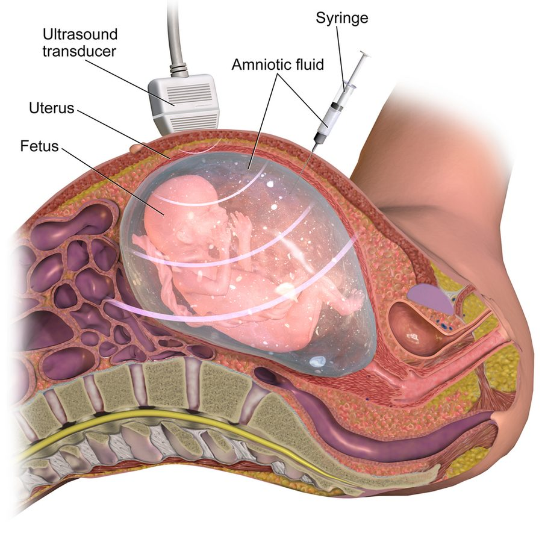

General information only. It does not replace advice from a health professional or genetic counselling.
At a glance
| Week | Test | What it is |
|---|---|---|
| 10 onwards | Cell-free fetal DNA in the mother's blood | Screening, very sensitive for trisomies |
| 11 to 13+6 | Combined screening | Ultrasound and blood test; screening |
| 11 to 14 | Chorionic villus sampling | Diagnosis, with a small sample of placenta |
| 15 onwards | Amniocentesis | Diagnosis, with amniotic fluid |
| 18 to 22 | Anomaly scan | Looks for malformations |


Screening and diagnosis: a key difference
There are two kinds of test in pregnancy, and confusing them causes a lot of anxiety:
- Screening tests do not give a diagnosis but a probability. They are harmless and offered to all pregnant women. A "high chance" result does not mean the baby has a condition, only that it should be confirmed.
- Diagnostic tests directly analyse cells from the fetus or placenta and give an almost certain answer. They require a needle procedure and carry a small risk.
Step 1: first-trimester combined screening
In Spain it is offered to all pregnant women in the public health system. It combines:
- An ultrasound scan between weeks 11 and 13+6 that measures nuchal translucency, a small fluid-filled space at the back of the fetus's neck. If it is thick, chromosomal anomalies and heart defects are more likely.
- A blood test from the mother that measures two placental hormones (PAPP-A and free beta-hCG).
- The mother's age.
From all this, the chance of Down syndrome and trisomies 18 and 13 is calculated. It detects about 85–90 % of cases of Down syndrome, with a 5 % false-positive rate.
Step 2: cell-free fetal DNA in the mother's blood
From week 10, a sample of the mother's blood contains fragments of DNA from the placenta. Analysing them detects more than 99 % of cases of Down syndrome with very few false positives. It is known as non-invasive prenatal testing (NIPT).
In the Spanish public health system it is offered when combined screening shows an intermediate or high chance, depending on each region's protocol, and privately to any pregnant woman who asks for it. It is still a screening test: a positive result must be confirmed with a diagnostic test, because sometimes the change is present only in the placenta and not in the fetus. It can also detect sex chromosome differences, such as Turner or Klinefelter syndrome, though less accurately.
Step 3: diagnostic tests
Chorionic villus sampling
Between weeks 11 and 14, a small sample of the placenta (the chorionic villi) is taken with a needle through the abdomen. Its advantage is that it is early. It is the test of choice when there is a known single-gene condition in the family and the couple want to know early whether the fetus has inherited it.
Amniocentesis
From week 15–16, a fine needle is used to draw a small amount of amniotic fluid, which contains fetal cells. It is guided by ultrasound and takes a few minutes.
The risk of miscarriage
For years a risk of 1 % was quoted. Today, with better techniques, studies estimate an additional risk of pregnancy loss of about 0.1–0.3 %, and in some studies it cannot be distinguished from the background risk.
What is analysed
- Karyotype or rapid techniques (QF-PCR) to count chromosomes, with results in 24–72 hours.
- Chromosomal microarray, which detects small losses or gains of chromosome material. It is recommended when the scan shows malformations.
- Testing for the family variant, when it is known.
- Fetal exome, in selected cases with unexplained malformations, increasingly used.
Step 4: the anomaly scan
Between weeks 18 and 22 a detailed scan checks the fetus's organs: heart, brain, spine, kidneys and limbs. It detects many malformations, although not all.
If the result is not what you hoped
A diagnosis of a serious condition in the fetus is very hard news. The couple should receive complete and balanced information about the condition, ideally from specialists in genetics and in the specific condition, and contact with family support groups if they wish.
In Spain, Organic Law 2/2010 allows termination of pregnancy up to week 22 when there is a risk of serious fetal anomalies, and later when anomalies incompatible with life or an extremely serious and incurable disease are found, confirmed by a clinical committee. Other couples, with the same information, decide to continue the pregnancy and prepare for the birth. Both decisions deserve respect and support.
See also: Newborn and prenatal screening, Down syndrome and Planning a pregnancy.
Sources
- American College of Obstetricians and Gynecologists. Screening for fetal chromosomal abnormalities: ACOG Practice Bulletin No. 226. Obstet Gynecol. 2020;136(4):e48-e69. doi:10.1097/AOG.0000000000004084
- Salomon LJ, Sotiriadis A, Wulff CB, Odibo A, Akolekar R. Risk of miscarriage following amniocentesis or chorionic villus sampling: systematic review of literature and updated meta-analysis. Ultrasound Obstet Gynecol. 2019;54(4):442-451. doi:10.1002/uog.20353
- Organic Law 2/2010 of 3 March on sexual and reproductive health and voluntary termination of pregnancy (Spain). BOE-A-2010-3514